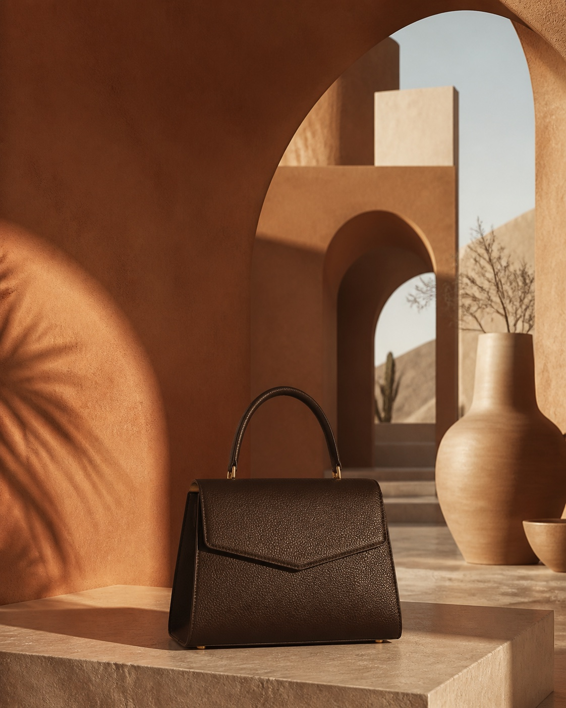
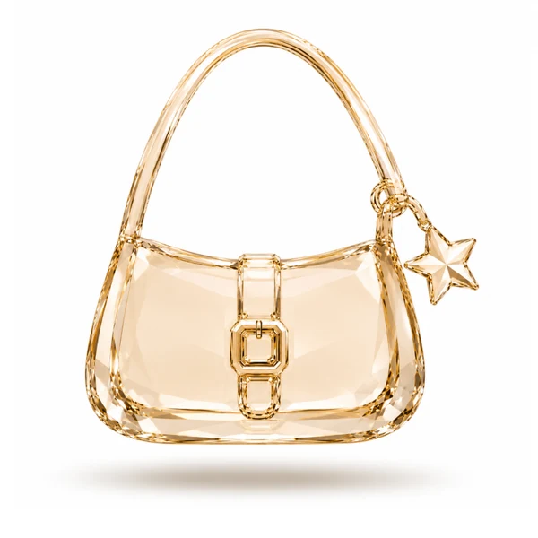
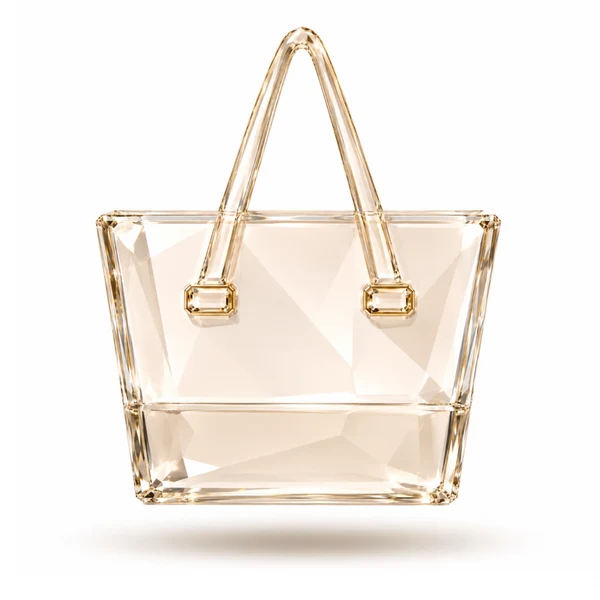

Bolsa de hombro de líneas suaves y correa corta para todos los días
$2,490 MXN
Sin guardar · sólo esta sesión.
Monetta / Motion study 01
Seis momentos para orientar, confirmar y acompañar una compra. Movimiento tranquilo, con la calidez de nuestra boutique.
Laboratorio aislado. Productos, precios y acciones de muestra. Nada se compra ni se guarda fuera de esta página.
Explorar los seis momentos
El menú entra desde el borde; los filtros suben en móvil. La búsqueda prioriza el campo y evita desplazar el contenido de fondo.
Selección Monetta

Bolsa de hombro
$2,490 MXN
Tote para cada día
$2,890 MXNLos filtros son una simulación local.
Una imagen nueva aparece sólo después de cargar. La selección se marca al instante; el texto siempre indica cuál imagen se está mostrando.
Selección de siluetas
$2,490 MXN
Nombre largo intencional. Fotografías del archivo de Monetta. Composición de producto ilustrativa.
Mostrando Hombro. Imagen de muestra.
La respuesta aparece junto a la acción. El contador se actualiza después del éxito simulado. Un error conserva la cantidad y permite reintentar.
Bolsa crossbody con correa ajustable para llevar lo esencial
$2,190 MXN
Artículo de demostraciónBolsa demo vacía. No hay conexión con Shopify.
Se activa después de agregar.
El total confirmado aparece arriba.
La imagen responde a hover o foco en escritorio. En móvil, la presión confirma el toque. Guardar siempre es una acción visible, separada.
Bolsa de hombro de líneas suaves y correa corta para todos los días
$2,490 MXN
Sin guardar · sólo esta sesión.
Tacto, foco y cursor
Prueba Tab para llegar a la imagen y luego al corazón. Pulsa para ver una respuesta local.
Este botón reproduce la señal también en pantallas táctiles; el producto sigue siendo una demo.
La información se abre al instante. Sólo la flecha gira, de modo que el contenido y los controles no persiguen una altura cambiante.
Cada detalle cuenta
Una silueta versátil para acompañarte en el día a día. Guarda tu pieza en un lugar seco y límpiala con un paño suave.
Texto ilustrativo; consulta la ficha real antes de comprar.
La información de envío se muestra completa, sin esperar a una animación.
Este laboratorio no representa políticas comerciales vigentes.
Compara las dimensiones y los materiales de cada pieza. Este apartado demuestra un título que puede ocupar varias líneas sin recortar controles.
Exploración de menor prioridad: reducir la duplicación de acciones fijas cuando la original está visible. El app y la web actuales usan una barra persistente. Esta alternativa espera validación de uso.
Esencial cotidiano
$2,890 MXN
Una pieza de líneas limpias para llevar lo que más importa.
Desplaza este marco para probar la continuidad de compra. La barra sólo aparece cuando la acción anterior queda por arriba.
Fotografía y contenido de muestra. Ninguna acción crea pedidos reales.
Un solo punto de acción
En escritorio, permanece.
La misma información vive en una columna visible junto al producto. No añadimos otra barra flotante al escritorio.
Desplaza el marco o usa sus controles con Tab.
El teléfono es un marco de evaluación, no una captura de un dispositivo. La barra no depende del ancho exterior del laboratorio.